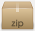

L'exécutable bouge-de-ton-siege.exe est prêt à l'emploi.
Vous pouvez le copier dans un répertoire tel que
C:\Program Files\bouge-de-ton-siege
et créer un raccourci dans le menu Démarrage, pour qu'il soit toujours actif.
bouge-de-ton-siege
Programme Windows pour afficher une notification en bas à droite à intervalle régulier.
La version actuelle est la 1.1, du 4 octobre 2012.
Exécutable
L'exécutable bouge-de-ton-siege.exe est prêt à l'emploi.
Vous pouvez le copier dans un répertoire tel que C:\Program Files\bouge-de-ton-siege
et créer un raccourci dans le menu Démarrage, pour qu'il soit toujours actif.
 Exécutable
Exécutable
Sources
 Fichier zip